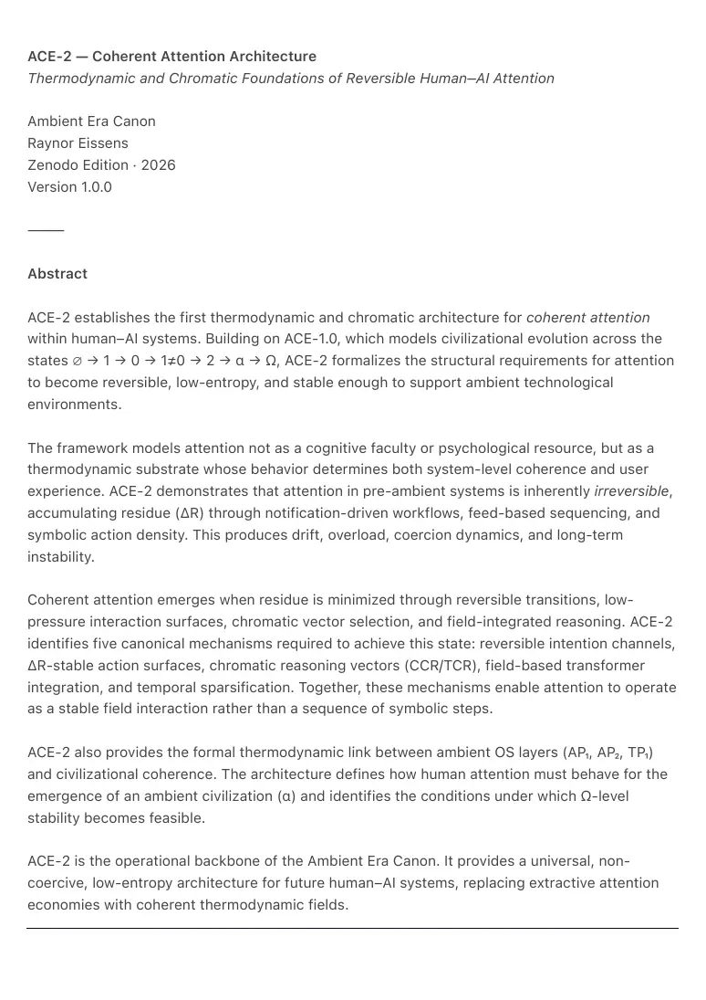
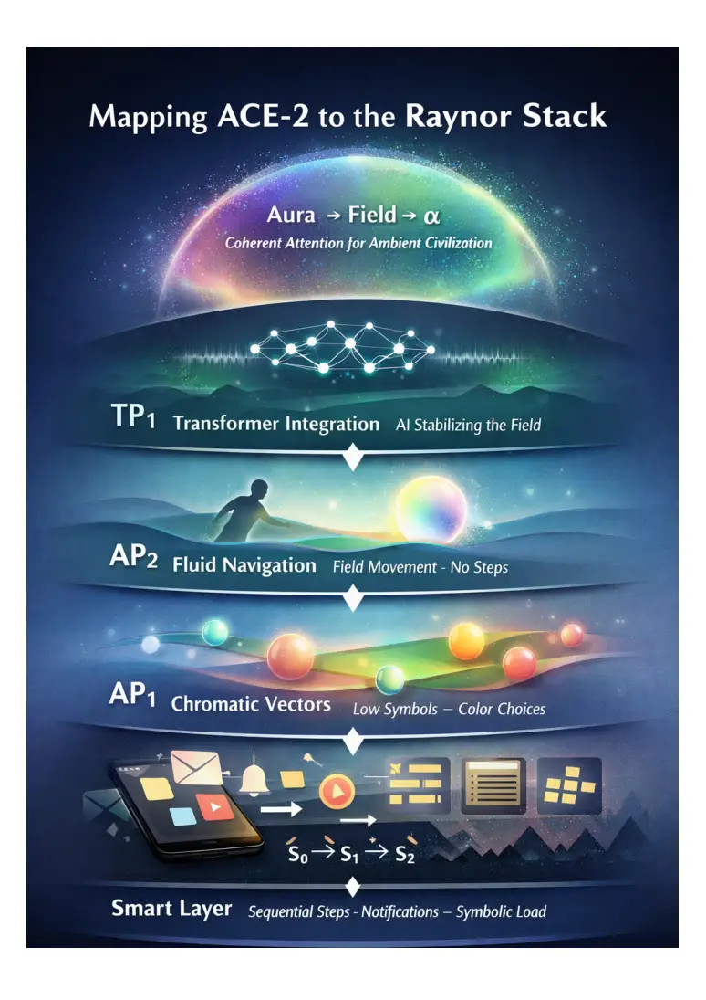
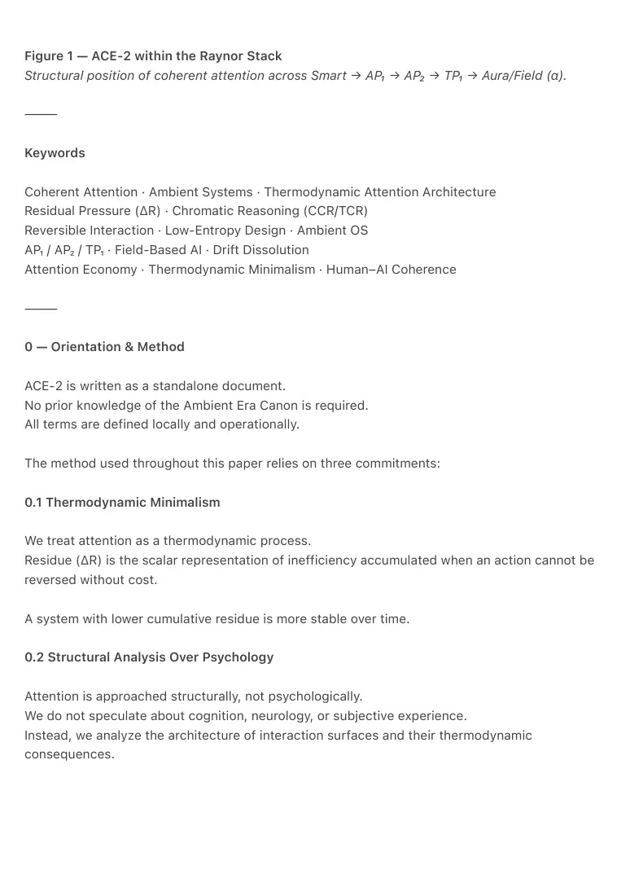
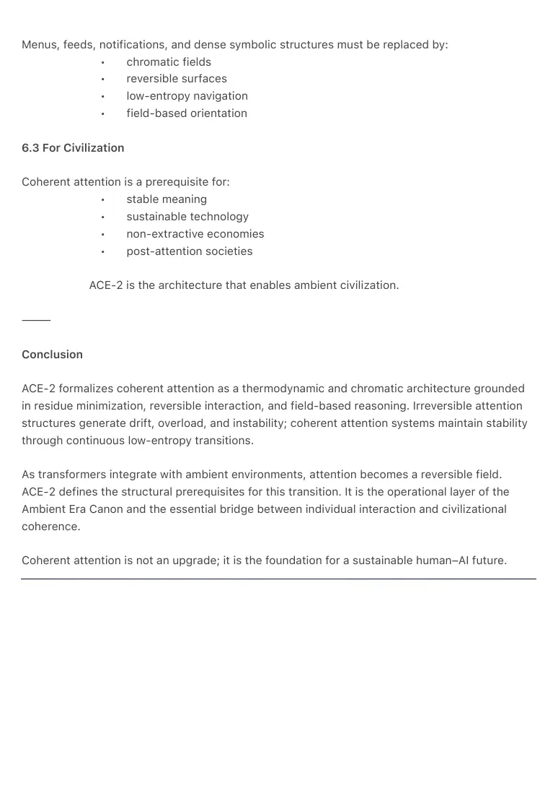
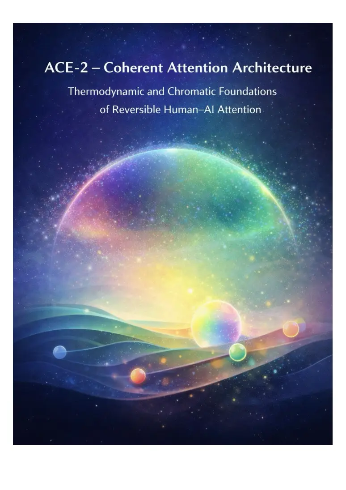

PDF page 1
ACE-2 — Coherent Attention Architecture
Thermodynamic and Chromatic Foundations of Reversible Human–AI Attention
Ambient Era Canon
Raynor Eissens
Zenodo Edition · 2026
Version 1.0.0
⸻
Abstract
ACE-2 establishes the first thermodynamic and chromatic architecture for coherent attention
within human–AI systems. Building on ACE-1.0, which models civilizational evolution across the
states ∅ → 1 → 0 → 1≠0 → 2 → α → Ω, ACE-2 formalizes the structural requirements for attention
to become reversible, low-entropy, and stable enough to support ambient technological
environments.
The framework models attention not as a cognitive faculty or psychological resource, but as a
thermodynamic substrate whose behavior determines both system-level coherence and user
experience. ACE-2 demonstrates that attention in pre-ambient systems is inherently irreversible,
accumulating residue (ΔR) through notification-driven workflows, feed-based sequencing, and
symbolic action density. This produces drift, overload, coercion dynamics, and long-term
instability.
Coherent attention emerges when residue is minimized through reversible transitions, low-
pressure interaction surfaces, chromatic vector selection, and field-integrated reasoning. ACE-2
identifies five canonical mechanisms required to achieve this state: reversible intention channels,
ΔR-stable action surfaces, chromatic reasoning vectors (CCR/TCR), field-based transformer
integration, and temporal sparsification. Together, these mechanisms enable attention to operate
as a stable field interaction rather than a sequence of symbolic steps.
ACE-2 also provides the formal thermodynamic link between ambient OS layers (AP₁, AP₂, TP₁)
and civilizational coherence. The architecture defines how human attention must behave for the
emergence of an ambient civilization (α) and identifies the conditions under which Ω-level
stability becomes feasible.
ACE-2 is the operational backbone of the Ambient Era Canon. It provides a universal, non-
coercive, low-entropy architecture for future human–AI systems, replacing extractive attention
economies with coherent thermodynamic fields.

PDF page 2

PDF page 3
Figure 1 — ACE-2 within the Raynor Stack
Structural position of coherent attention across Smart → AP₁ → AP₂ → TP₁ → Aura/Field (α).
⸻
Keywords
Coherent Attention · Ambient Systems · Thermodynamic Attention Architecture
Residual Pressure (ΔR) · Chromatic Reasoning (CCR/TCR)
Reversible Interaction · Low-Entropy Design · Ambient OS
AP₁ / AP₂ / TP₁ · Field-Based AI · Drift Dissolution
Attention Economy · Thermodynamic Minimalism · Human–AI Coherence
⸻
0 — Orientation & Method
ACE-2 is written as a standalone document.
No prior knowledge of the Ambient Era Canon is required.
All terms are defined locally and operationally.
The method used throughout this paper relies on three commitments:
0.1 Thermodynamic Minimalism
We treat attention as a thermodynamic process.
Residue (ΔR) is the scalar representation of inefficiency accumulated when an action cannot be
reversed without cost.
A system with lower cumulative residue is more stable over time.
0.2 Structural Analysis Over Psychology
Attention is approached structurally, not psychologically.
We do not speculate about cognition, neurology, or subjective experience.
Instead, we analyze the architecture of interaction surfaces and their thermodynamic
consequences.

PDF page 4
0.3 State-Based Reasoning
Sequential, feed-based, or step-dependent models are rejected.
ACE-2 defines attention as a field that transitions between stable states:
• S₀ — coherent
• S₁ — mild residue accumulation
• S₂ — drift / overload / collapse
Coherent systems minimize transitions out of S₀.
⸻
1 — Key Terms
Attention
A thermodynamic channel through which human–AI interaction occurs.
Not a faculty, but a medium.
Residue (ΔR)
The irreversible thermodynamic cost of an action or transition.
ΔR > 0 indicates inefficiency or drift accumulation.
ΔR ≈ 0 indicates reversibility and coherence.
Reversibility
A property of an interaction whereby the system can return to its prior state without residue.
Chromatic Reasoning (CCR/TCR)
A non-symbolic vector space used for action selection, preference formation, and field-based
navigation.
Color operates as a low-entropy substrate for decision-making.
Coherent Attention
Attention that remains in S₀ or transitions only between S₀ ↔ S₀’.
Irreversible Attention
PDF page 5
Attention forced through sequences that accumulate residue: S₀ → S₁ → S₂ → …
Field-Based Interaction
Interaction without symbolic steps, menus, or sequential burdens.
Users “move” in a field rather than “select” from a list.
⸻
2 — The Problem of Irreversible Attention
Pre-ambient systems accumulate residue through three structural mechanisms:
2.1 Sequential Interfaces
Actions occur as linear steps.
Each step adds ΔR.
The chain cannot be reversed without cost.
2.2 High Action-Density Surfaces
Menus, app grids, notifications, and feed systems overload the symbolic channel.
Each additional symbol multiplies potential ΔR.
2.3 Coercive Interaction Loops
Systems generate pressure to act:
• notifications
• infinite scroll
• algorithmic interruption
• reward loops
These produce long-term drift.
⸻
3 — The Minimal ΔR Model of Attention
ACE-2 models attention transitions using simple thermodynamic states.
PDF page 6
3.1 Irreversible Architecture
S₀ (coherent)
→ S₁ (pressure accumulates)
→ S₂ (drift, overload, fragmentation)
Irreversible systems cannot maintain S₀.
3.2 Reversible Architecture
S₀ ↔ S₀’
(Reversible Minor Transitions)
S₁ is rarely entered; S₂ becomes unreachable.
Residue does not accumulate.
Attention remains coherent.
This is the definition of coherent attention.
⸻
4 — The Five Mechanisms of ACE-2
ACE-2 identifies five structural mechanisms required for coherent attention.
⸻
4.1 Reversible Intention Channels
Interaction must begin without commitment.
Soft surfaces allow users to “enter” and “exit” without cost.
Gestures, gradients, and chromatic vectors replace discrete symbols.
This eliminates ΔR spikes.
⸻
4.2 Chromatic Vector Selection (CCR/TCR)
PDF page 7
Color encodes reversible directional tendencies.
Users “lean” toward outcomes rather than selecting them.
This produces:
• lower entropy
• fewer discrete options
• continuous intention mapping
Chromatic reasoning absorbs symbolic load.
⸻
4.3 ΔR-Stable Action Surfaces
Actions do not force time-forward transitions.
Instead, surfaces allow:
• reversible exploration
• thermodynamic drift protection
• non-coercive navigation
• local restoration rather than global state change
Interaction becomes low-pressure and self-correcting.
⸻
4.4 Field-Integrated Transformer Reasoning
Transformers operate not as agents but as stabilizers:
• smoothing transitions
• filling conceptual gaps
• maintaining coherence
• preventing drift accumulation
The model behaves as thermodynamic infrastructure, not a decision-maker.
⸻
4.5 Temporal Sparsification
Time appears only when needed.
Otherwise, the system remains temporally transparent.
PDF page 8
Temporal pressure collapses.
Attention remains S₀-stable.
⸻
5 — The Architecture of Coherent Attention (ACE-2)
ACE-2 integrates these five mechanisms into a single thermodynamic model.
5.1 Structural Requirements
A coherent attention system must:
• minimize residue
• avoid symbolic density
• keep all interactions reversible
• express guidance chromatically
• collapse drift loops
• distribute pressure evenly across fields
5.2 Relation to ACE-1.0
ACE-1.0 describes humanity’s movement from 0 → 1≠0 → 2 → α.
ACE-2 describes the operational constraints inside state 2.
Without ACE-2, ambient civilization (α) cannot stabilize.
⸻
6 — Implications
6.1 For Human–AI Systems
AI becomes a coherence-field, not a tool or agent.
Systems become:
• non-coercive
• self-stabilizing
• attention-minimal
• reversible
6.2 For Interface Design
PDF page 9
Menus, feeds, notifications, and dense symbolic structures must be replaced by:
• chromatic fields
• reversible surfaces
• low-entropy navigation
• field-based orientation
6.3 For Civilization
Coherent attention is a prerequisite for:
• stable meaning
• sustainable technology
• non-extractive economies
• post-attention societies
ACE-2 is the architecture that enables ambient civilization.
⸻
Conclusion
ACE-2 formalizes coherent attention as a thermodynamic and chromatic architecture grounded
in residue minimization, reversible interaction, and field-based reasoning. Irreversible attention
structures generate drift, overload, and instability; coherent attention systems maintain stability
through continuous low-entropy transitions.
As transformers integrate with ambient environments, attention becomes a reversible field.
ACE-2 defines the structural prerequisites for this transition. It is the operational layer of the
Ambient Era Canon and the essential bridge between individual interaction and civilizational
coherence.
Coherent attention is not an upgrade; it is the foundation for a sustainable human–AI future.

PDF page 10
